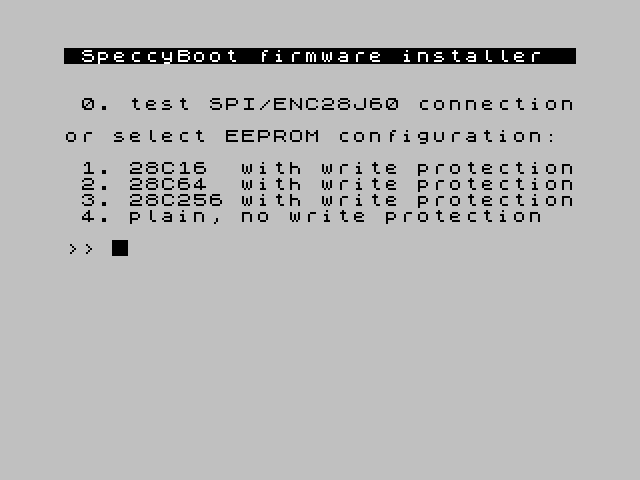

NOTE: I assume no responsibility for what happens if you connect this to your Spectrum. This design works well for me, but be aware that a mistake (yours or mine) may destroy your dear Spectrum. You have been warned!
There are three steps to building a SpeccyBoot: building the hardware, building the firmware, and getting the firmware onto the hardware.
Building the hardware
The schematic design is available here.
{kind=link}
I built the device on a basic lab board. I'm not much of a soldering wizard, but you should probably have some rudimentary soldering experience to pull this off. A few notes on the design:
-
I chose to use the Olimex ENC28J60-H development board for the Ethernet subsystem. This is not only easier, it also helps to avoid disturbances from my abysmal soldering skills. (The ENC28J60 data sheet recommends surface mounting at least some components, and this is done on the ENC28J60-H board.)
(There now seems to be a newer development board, MOD-ENC28J60, that appears to be both cheaper and easier to connect. I haven't tried it, but it looks interesting.)
- The jumper JP1, when closed, disables the EEPROM (useful when it contains garbage).
- Use this hardware design as you wish. Feel free to build and sell devices based on this design; if they look good, I'd like to buy one!
Approximate component cost (excluding board, connectors etc):
| Component | Approx. cost (EUR) |
|---|---|
| MOD-ENC28J60 or ENC28J60-H development board | 6–14 |
| 28C16 EEPROM | 2 |
| Other (74HCT32N OR gates, 74HCT139N decoder, 74HCT244N buffer, 74HCT273N flip-flop, 5V + 3.3V regulators) | 2 |
| Total | ≈ 10–18 |
DGBoot: an alternate design for the Didaktik Gama
If you have a Didaktik Gama, there is an even easier way to connect the ENC28J60 board. This Czechoslovakian ZX Spectrum clone has a few special features, including an '8255 parallel port. The ENC28J60-H board can be connected directly to this port without any additional active components (except the 3.3V supply). The bus expansion port remains free for other peripherals.
The modified SpeccyBoot firmware (see below for firmware build instructions) is combined with the original Didaktik Gama BASIC in a double-capacity EPROM (27C256, 32Kx8), which replaces the original chip in the internal socket.
The DGBoot design was kindly contributed by Imrich Konkol. More information, including schematics, is available in his blog (Slovak).
Building the firmware
sudo apt install git build-essential sdcc python3 git clone https://github.com/patrikpersson/speccyboot.git cd speccyboot make
This should work in any recent Debian or Ubuntu Linux distribution. The sdcc compiler itself is not used, only the Z80 assembler and linker, but this is the easiest way to install them. I use the sdcc 3.8.0 package (the standard option in Ubuntu 20.04).
When the build completes, you should have a file named speccyboot.wav in your working directory. This WAV file includes the SpeccyBoot firmware and a loader application, both in the format expected by the Spectrum. (I load the WAV file to my phone, and play it to the Spectrum from there.)
Building for DGBoot
If you want to build the firmware for the DGBoot design instead, use this make command instead:
make clean && make DGBOOT=1
This image then needs to be included in the new 32K (EP)ROM as follows:
| Address range | Contents |
|---|---|
| 0–2047 | SpeccyBoot firmware, built with make DGBOOT=1 |
| 2048–16383 | 0xFF |
| 16384–32767 | Didaktik Gama '89 ROM |
Installing the firmware on the device
If you have an (E)EPROM programmer, you can use that, of course. (In that case you can safely leave out the EEPROM write logic from the hardware too.)
Otherwise use the Spectrum to install the firmware, as follows:
- Boot to BASIC.
- If you have a previous version of the SpeccyBoot firmware on the device, hold CAPS SHIFT pressed while resetting or powering on your Spectrum.
- Otherwise, turn off your Spectrum, close JP1 to disable EEPROM, and then power on your Spectrum.
- Load the file speccyboot.wav, produced by building the
software above, to the Spectrum. After about a minute of loading,
you should see the following screen:
 - Remove the JP1 jumper to enable EEPROM (if you hadn't already).
- Press 1, 2 or 3 (depending on the EEPROM model you use). The new firmware is written to EEPROM. If you chose to use software-controlled write protection, this stage will take about two seconds, otherwise it will take less.
- A message indicating success (or failure) is displayed:

If this step fails, repeat from step 1, and ensure JP1 is set correctly. - Reboot your Spectrum. It should now be running the recently loaded SpeccyBoot firmware.